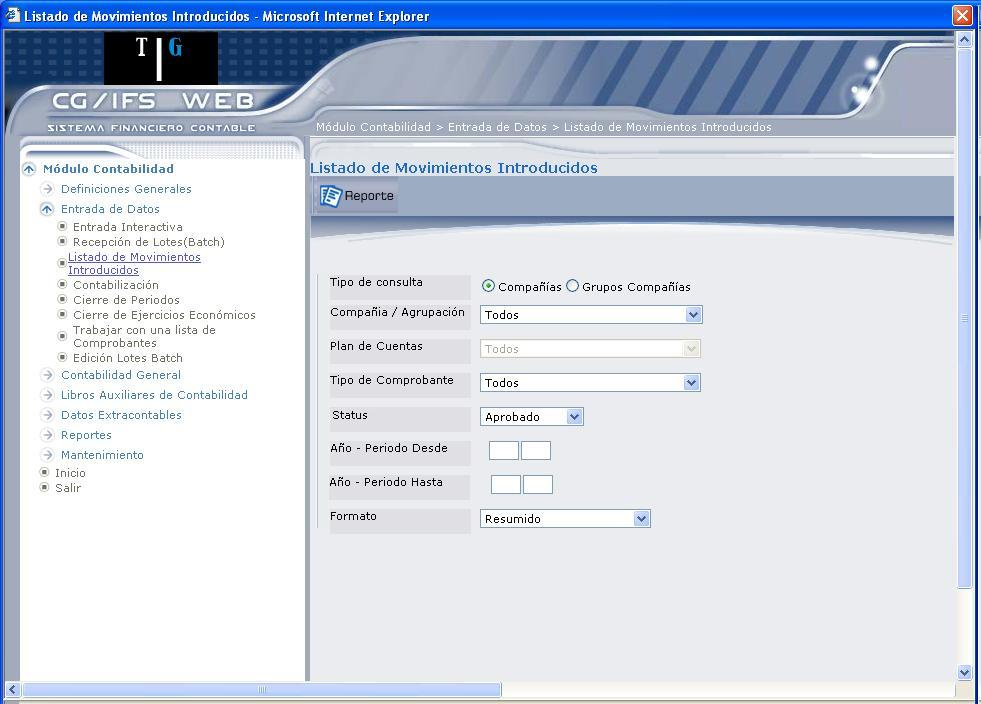
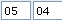

Listado de Movimientos Introducidos
Permite desplegar una consulta de los Movimientos Introducidos ingresando parámetros de consulta como Compañía, Tipo de Comprobante, Status, etc., esto permite revisar los movimientos antes de pasar a la fase de contabilización.
El acceso a esta opción requiere que el usuario tenga las siguientes autorizaciones:
- Autorización a consulta de movimientos para la clase de elemento Compañía o para la clase de elemento Grupos de Compañías según el elemento seleccionado.
- Autorización a consulta de movimientos para la clase de elemento Tipos de Comprobante para el tipo seleccionado.
- Autorización a consulta de saldos y movimientos para la clase de elemento 'Planes de Cuentas' dependiendo de seleccionada.
Esta opción permite obtener listados de los movimientos introducidos en CG/Web. Dichos listados se pueden obtener según los siguientes parámetros de selección:
- Para una Compañía determinada.
- Para las Compañías de un Grupo de Compañías que trabajan con el mismo Plan de Cuentas.
- Para todas las Compañías que trabajan con el mismo Plan de Cuentas.
- Para un Tipo de Comprobante determinado.
- Por el estado del Comprobante (aprobados, no aprobados, contabilizados o rechazados).
Así mismo dependiendo del estado del Comprobante seleccionado se pueden seleccionar los comprobantes de un determinado periodo, si se seleccionan Comprobantes contabilizados o un comprobante determinado. Si se seleccionan los comprobantes con estado aprobado o por aprobar es posible seleccionar los introducidos desde una determinada estación de trabajo y además seleccionarlos por el usuario que introdujo o aprobó los Comprobantes.
Adicionalmente a todos los parámetros de selección anteriormente expuestos, es posible generar los listados:
Resumidos: sólo aparecen los importes en Moneda Local y sin la descripción de los movimientos.
Detallado: igual que el anterior pero con la descripción de cada uno de los movimientos.
La pantalla que se presenta es la que muestra 1.19.

Figura 1. Listado de Movimientos Introducidos
Ingrese los siguientes parámetros para presentar el Listado de Movimientos ingresados.
Tipo de Consulta:
Marque el casillero de selección correspondiente “Compañías” o “Grupos de Compañías”
Compañía / Agrupación:
Anotar el código de o Agrupación y el código del Plan de Cuentas. Para mayor información ver el capítulo de este mismo manual DEFINICIONES GENERALES/GRUPOS DE COMPAÑÍAS.
Plan de Cuentas:
Esta información depende de o Grupo de Compañía que seleccione. Si no aplica esta información, este campo permanece protegido.
Tipo de Comprobante:
Seleccione el código del Tipo de Comprobante del que se desean listar los Comprobantes. El usuario debe tener autorización a la consulta de la clase de elemento Tipos de Comprobante.
Status:
Seleccione el estado de los movimientos que desea presentar. Los posibles estados son: Aprobado, Contabilizado, Rechazado y No Aprobado.
Año – Periodo Desde: (campo obligatorio)
Digite desde qué año-periodo desea presentar los movimientos. Por ejemplo:
Si desea ingresar el 2005, periodo 04, debe digitar: 
Año – Periodo Hasta: (campo obligatorio)
Digite hasta qué año-periodo desea presentar los movimientos.
Si desea listar todos los movimientos introducidos, marcar desde 40-01 hasta 39-99.
Formato:
Seleccione en qué formato desea desplegar la información: Resumido, Detallado, Detallado Ctas. Auxiliares y Detallado 3er Importe.
Created with the Personal Edition of HelpNDoc: Easy CHM and documentation editor